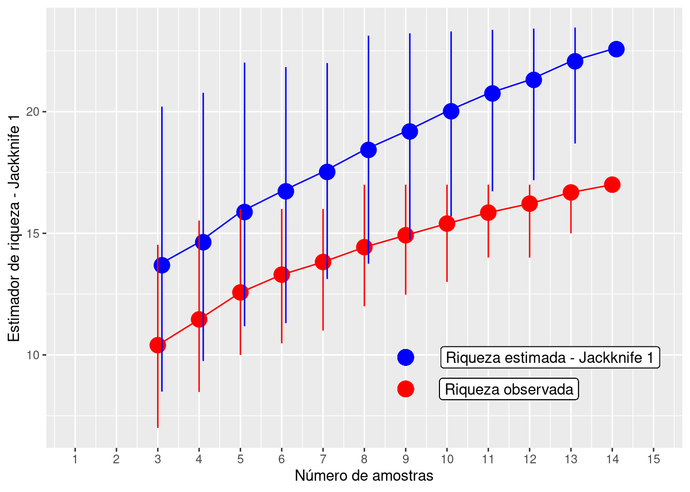
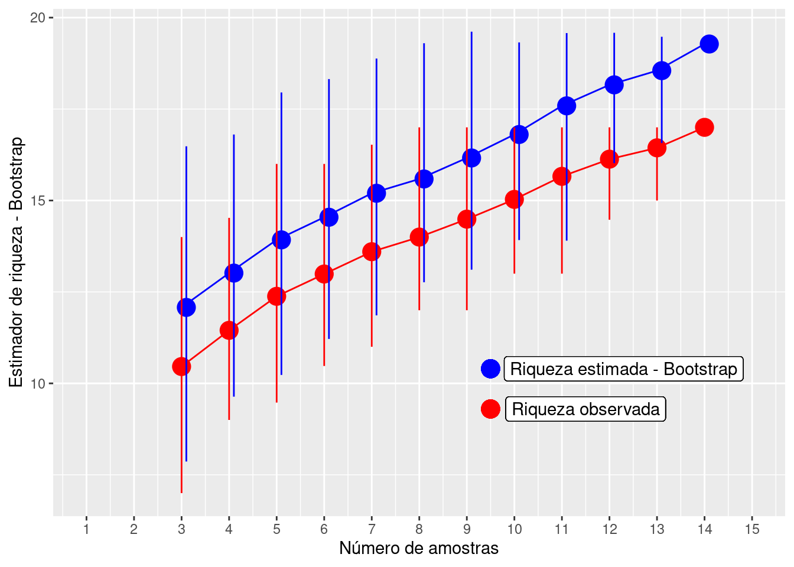
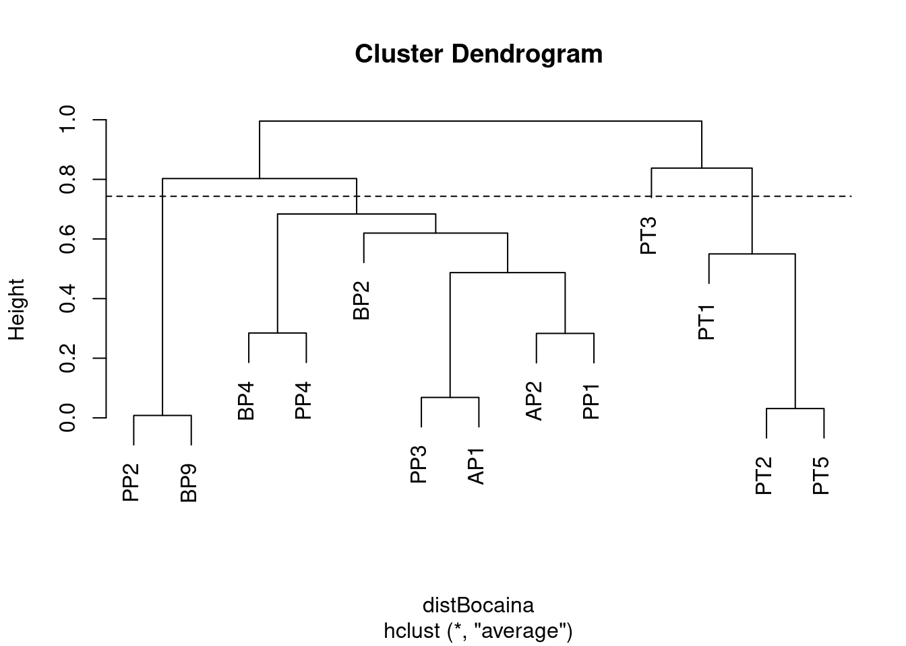
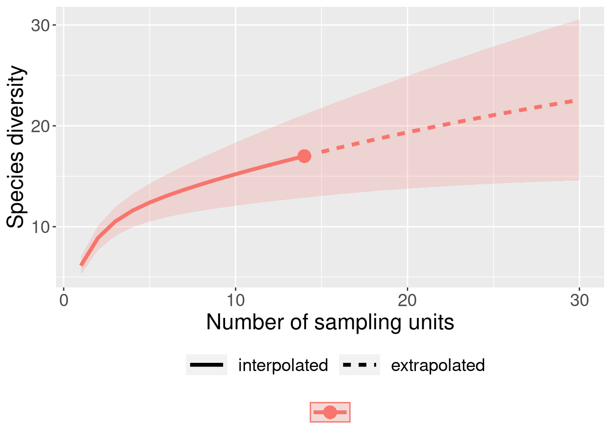

Capítulo 5 Estimadores de Riqueza
5.1 Backgorund da análise
Uma vez que determinar o número total de espécies numa área é praticamente impossível, principalmente em regiões com alta riqueza de espécies, os estimadores são úteis para extrapolar a riqueza observada e tentar estimar a riqueza total através de uma amostra incompleta de uma comunidade biológica (Walther & Moore 2005). Neste capítulo serão considerados os estimadores não paramétricos que usam informações da frequencia de espécies raras na comunidade (Gotelli & Chao 2013). Isto porque tanto os testes paramétricos que tentam determinar os parâmetros de uma curva usando o formato da curva de acumulação de espécies (e.g. equação logística, Michaelis-Menten) quanto os testes que usam a frequencia do número de indivíduos para enquadrá-las em uma das distribuições de abundância das espécies (e.g. distribuições log-séries, log-normal) não funcionam muito bem com dados empíricos (Gotelli & Chao 2013). Para mais detalhes sobre os testes paramétricos veja Magurran (2004) e Colwell (2019).
5.1 Quatro características para um bom estimador de riqueza (Chazdon et al. 1998; Horter et al. 2006):
- Independência do tamanho da amostra (quantidade de esforço amostral realizado);
- Insensibilidade a diferentes padrões de distribuições (diferentes equitabilidades);
- Insensibilidade em relação à ordem das amostragens;
- Insensibilidade à heterogeneidade entre as amostras usadas entre estudos.
5.2 Estimadores baseados na abundância das espécies
5.2.1 CHAO 1 - (Chao 1984, 1987):
Estimador simples do número absoluto de espécies em uma comunidade. É baseado no número de espécies raras dentro de uma amostra.
\[Chao_{1} = S_{obs} + \left(\frac{n-1}{n}\right)\frac{F_1(F_1-1)}{2(F_2+1)}\]
onde:
Sobs = o número de espécies na comunidade,
n = número de amostras,
F1 = número de espécies observadas com abundância de um indivíduo (espécies singleton),
F2 = número de espécies observadas com abundância de dois indivíduos (espécies doubletons).
O valor de Chao 1 é máximo quando todas as espécies menos uma são únicas (singleton). Neste caso, a riqueza estimada é aproximadamente o dobro da riqueza observada.
5.2.1.1 Exemplo prático - Chao 1
5.2.1.1.1 Explicação dos dados
Neste exemplo usaremos os dados de 17 espécies de anuros amostradas em 14 dias de coletas de campo em um habitat reprodutivo localizado na região noroeste do estado de São Paulo, Brasil.
Pergunta:
Quantas espécies a mais poderiam ser amostradas caso aumentassemos o esforço amostral?
Predições
- O número de espécies estimadas é similar ao número de espécies observada;
- O número de espécies estimadas é maior do que o número de espécies observada.
Variáveis
- Variáveis preditoras
- matriz ou vetor com as abundâncias das espécies de anuros registradas em um habitat reprodutivo
Checklist
- Verificar se a sua matriz está com as espécies nas colunas e as amostragens nas linhas
- Verificar se os dados são de abundância e não presença e ausência
5.2.2 Análise
Calculo do estimador de riqueza - Chao 1
library(ecodados)
library(vegan)
dados_coleta <- poca_anuros
est_chao1 <- estaccumR(dados_coleta, permutations = 100)
summary(est_chao1, display = "chao")## $chao
## N Chao 2.5% 97.5% Std.Dev
## Dia_5 1 6.536667 3.0000 11.700 2.381134
## Dia_11 2 9.539000 6.0000 15.000 2.626646
## Dia_7 3 10.862500 7.4750 16.525 2.274985
## Dia_12 4 11.896667 8.0000 17.700 2.346168
## Dia_3 5 12.490000 9.0000 17.525 2.134844
## Dia_2 6 13.111667 10.0000 20.100 2.424483
## Dia_6 7 13.865000 10.4750 20.100 2.288371
## Dia_13 8 15.170000 12.0000 22.000 2.674439
## Dia_4 9 16.170000 12.0000 22.000 2.938958
## Dia_10 10 17.045000 13.0000 22.000 2.854285
## Dia_14 11 17.685000 13.0000 22.000 2.658752
## Dia_9 12 18.500000 14.2375 22.000 2.397389
## Dia_1 13 18.980000 15.5000 22.000 1.942247
## Dia_8 14 20.000000 20.0000 20.000 0.000000
##
## attr(,"class")
## [1] "summary.poolaccum"Visualizar os resultados com intervalo de confiança de 95%.
library(ggplot2)
# preparando os dados para fazer o gráfico
resultados <- summary(est_chao1, display = c("S", "chao"))
res_chao <- cbind(resultados$chao[,1:4], resultados$S[,2:4])
res_chao <- as.data.frame(res_chao)
colnames(res_chao) <- c("Amostras", "Chao", "C_inferior", "C_superior", "Riqueza",
"R_inferior", "R_superior")
# comando para o gráfico
ggplot(res_chao, aes(y = Riqueza, x = Amostras)) +
geom_point(aes(y = Chao, x = Amostras + 0.1), size = 5, color = "blue", alpha = 1) +
geom_point(aes(y = Riqueza, x = Amostras), size = 5, color = "red", alpha = 1) +
geom_line (aes(y = Chao, x = Amostras), color = "blue") +
geom_line (aes(y = Riqueza, x = Amostras), color = "red") +
geom_linerange(aes(ymin = C_inferior, ymax = C_superior, x = Amostras + 0.1),
color = "blue") +
geom_linerange(aes(ymin = R_inferior, ymax = R_superior, x = Amostras), color = "red") +
ylab ("Estimador de riqueza - Chao 1") +
xlab ("Número de amostras") +
scale_x_continuous(limits = c(1,15), breaks=seq(1,15,1)) +
geom_point(y= 7.5, x = 9, size = 5, color = "blue", alpha = 1) +
geom_point(y= 5.9, x = 9, size = 5, color = "red", alpha = 1) +
geom_label( y = 7.5, x = 12, label = "Riqueza estimada - Chao 1") +
geom_label( y = 5.9, x = 11.3, label = "Riqueza observada")
5.2.2.1 Interpretação dos resultados
Com base no número de espécies raras (singletons e doubletons), o estimador Chao 1 indica a possibilidade de encontrarmos mais três espécies caso o esforço amostral fosse maior e não mostra tendência de estabilização da curva em uma assíntota.
5.2.3 ACE - Abundance-based Coverage Estimador (Chao & Lee 1992, Chao et al. 2000):
Este método trabalha com a abundância das espécies raras (i.e. abundância baixa). Entretanto, diferente do estimador anterior, esse método permite ao pesquisador determinar os limites para os quais uma espécie seja considerada rara. Em geral, são consideradas raras espécies com abundância entre 1 e 10 indivíduos. A riqueza estimada pode variar conforme se aumente ou diminua o limiar de abundância, e infelizmente não existem critérios biológicos definidos para a escolha do melhor intervalo.
\[ACE = S_{abund} + \frac{S_{rare}}{C_{ace}} + \frac{F_1}{C_{ace}}Y_{ace}^2\]
onde:
\[Y_{ace}^2 = max \left[\frac{S_{rare}}{C_{ace}}\frac{\sum_{i=i}^{10}i(i-1)F1}{(N_{rare})({N_{rare} - 1)}}-1,0\right]\]
\[C_{ace} = 1 - \frac{F1}{N_{rare}}\]
\[N_{rare} = \sum_{i=1}^{10}iF_i\]
Não precisa fazer cara feia, é óbvio que iremos usar o programa para fazer esses cálculos.
5.2.3.1 Exemplo prático - ACE
5.2.3.1.1 Explicação dos dados
Usaremos os mesmos dados de 17 espécies de anuros amostradas em 14 dias de coletas de campo em um habitat reprodutivo localizado na região noroeste do estado de São Paulo, Brasil.
Pergunta:
Quantas espécies a mais poderiam ser amostradas caso aumentassemos o esforço amostral?
Predições
- O número de espécies estimadas é similar ao número de espécies observada;
- O número de espécies estimadas é maior do que o número de espécies observada.
Variáveis
- Variáveis preditoras
- matriz ou vetor com as abundâncias das espécies de anuros registradas em um habitat reprodutivo
Checklist
- Verificar se a sua matriz está com as espécies nas colunas e as amostragens nas linhas
- Verificar se os dados são de abundância e não presença e ausência
5.2.4 Análise
Calculo do estimador de riqueza - ACE
library(vegan)
dados_coleta <- poca_anuros
est_ace <- estaccumR(dados_coleta, permutations = 100)
summary(est_ace, display = "ace")## $ace
## N ACE 2.5% 97.5% Std.Dev
## Dia_13 1 7.275629 3.545190 13.71429 2.751336
## Dia_12 2 10.054538 6.000000 16.67297 2.817916
## Dia_3 3 11.650317 7.675156 17.57961 2.758838
## Dia_1 4 12.550432 8.781898 18.09524 2.614171
## Dia_7 5 13.355974 9.000000 18.57575 2.597478
## Dia_9 6 14.382648 10.000000 20.38686 2.871141
## Dia_2 7 15.372007 10.000000 21.08070 2.973356
## Dia_4 8 16.216130 11.000000 22.61582 3.108951
## Dia_8 9 17.557902 12.197607 24.60822 3.315082
## Dia_11 10 19.181485 13.465577 25.72368 4.074365
## Dia_14 11 20.930313 13.720826 25.72368 3.993186
## Dia_10 12 22.559988 15.192940 25.72368 3.511785
## Dia_6 13 24.102856 17.676471 25.72368 2.234964
## Dia_5 14 24.703704 24.703704 24.70370 0.000000
##
## attr(,"class")
## [1] "summary.poolaccum"Visualizar os resultados com intervalo de confiança de 95%
library(ggplot2)
# preparando os dados para fazer o gráfico
resultados_ace <- summary(est_ace, display = c("S", "ace"))
res_ace <- cbind(resultados_ace$ace[,1:4], resultados_ace$S[,2:4])
res_ace <- as.data.frame(res_ace)
colnames(res_ace) <- c("Amostras", "ACE", "ACE_inferior", "ACE_superior", "Riqueza",
"R_inferior", "R_superior")
# comando para o gráfico
ggplot(res_ace, aes(y = Riqueza, x = Amostras)) +
geom_point(aes(y = ACE, x = Amostras + 0.1), size = 5, color = "blue", alpha = 1) +
geom_point(aes(y = Riqueza, x = Amostras), size = 5, color = "red", alpha = 1) +
geom_line (aes(y = ACE, x = Amostras), color = "blue") +
geom_line (aes(y = Riqueza, x = Amostras), color = "red") +
geom_linerange(aes(ymin = ACE_inferior, ymax = ACE_superior, x = Amostras + 0.1),
color = "blue") +
geom_linerange(aes(ymin = R_inferior, ymax = R_superior, x = Amostras), color = "red") +
ylab ("Estimador de riqueza - ACE") +
xlab ("Número de amostras") +
scale_x_continuous(limits = c(1,15), breaks=seq(1,15,1)) +
geom_point(y= 7.5, x = 9, size = 5, color = "blue", alpha = 1) +
geom_point(y= 5.9, x = 9, size = 5, color = "red", alpha = 1) +
geom_label( y = 7.5, x = 11.7, label = "Riqueza estimada - ACE") +
geom_label( y = 5.9, x = 11.3, label = "Riqueza observada")
5.2.4.1 Interpretação dos resultados
Com base no número de espécies raras (abundância menor que 10 indivíduos - default), o estimador ACE indica a possibilidade de encontrarmos mais sete espécies caso o esforço amostral fosse maior e não mostrou tendência de estabilição da curva em uma assíntota.
5.3 Estimadores baseados na incidência das espécies
5.3.1 CHAO 2 - (Chao 1987):
De acordo com Anne Chao, o estimador Chao 1 pode ser modificado para uso com dados de presença/ausência levando em conta a distribuição das espécies entre amostras. Neste caso é necessário conhecer o número de espécies encontradas em somente uma amostra e o número de espécies encontradas exatamente em duas amostras. Essa variação ficou denominada como Chao 2:
\[Chao_{2} = S_{obs} + \left(\frac{m-1}{m}\right)\left(\frac{Q_1(Q_1-1)}{2(Q_2 + 1}\right)\]
onde:
Sobs = o número de espécies na comunidade,
m = número de amostragens,
Q1 = número de espécies observadas em uma amostragem (espécies uniques),
Q2 = número de espécies observadas em duas amostragens (espécies duplicates).
O valor de Chao2 é máximo quando as espécies menos uma são únicas (uniques). Neste caso, a riqueza estimada é aproximadamente o dobro da riqueza observada. Colwell & Coddington (1994) encontraram que o valor de Chao 2 mostrou ser o estimador menos enviesado para amostras com tamanho pequeno.
5.3.1.1 Exemplo prático - Chao 2
5.3.1.1.1 Explicação dos dados
Usaremos os mesmos dados de 17 espécies de anuros amostradas em 14 dias de coletas de campo em um habitat reprodutivo localizado na região noroeste do estado de São Paulo, Brasil.
Pergunta:
Quantas espécies a mais poderiam ser amostradas caso aumentassemos o esforço amostral?
Predições
- O número de espécies estimadas é similar ao número de espécies observada;
- O número de espécies estimadas é maior do que o número de espécies observada.
Variáveis
- Variáveis preditoras
- matriz ou vetor com a incidência das espécies de anuros registradas em um habitat reprodutivo
Checklist
- Verificar se a sua matriz está com as espécies nas colunas e as amostragens nas linhas
5.3.2 Análise
Calculo do estimador de riqueza - Chao 2
library(vegan)
dados_coleta <- poca_anuros
est_chao2 <- poolaccum(dados_coleta, permutations = 100)
summary(est_chao2, display = "chao")## $chao
## N Chao 2.5% 97.5% Std.Dev
## [1,] 3 13.54794 9.266667 21.00000 3.133326
## [2,] 4 15.35737 9.075000 25.63125 4.555731
## [3,] 5 17.16733 10.232000 29.13500 5.816714
## [4,] 6 18.94111 10.373264 35.94167 7.154390
## [5,] 7 20.88500 12.639286 39.57500 7.241896
## [6,] 8 22.04245 13.058333 38.43750 6.732962
## [7,] 9 23.47926 13.830556 38.77778 6.919071
## [8,] 10 25.56650 13.900000 40.70375 7.121043
## [9,] 11 27.41682 16.372727 40.94318 6.828789
## [10,] 12 28.82625 18.666667 39.45833 5.879808
## [11,] 13 31.31462 22.384615 39.61538 5.129360
## [12,] 14 33.71429 33.714286 33.71429 0.000000
##
## attr(,"class")
## [1] "summary.poolaccum"Visualizar os resultados com intervalo de confiança de 95%
library(ggplot2)
# preparando os dados para fazer o gráfico
resultados_chao2 <- summary(est_chao2, display = c("S", "chao"))
res_chao2 <- cbind(resultados_chao2$chao[,1:4], resultados_chao2$S[,2:4])
res_chao2 <- as.data.frame(res_chao2)
colnames(res_chao2) <- c("Amostras", "Chao2", "C_inferior", "C_superior", "Riqueza",
"R_inferior", "R_superior")
# comando para o gráfico
ggplot(res_chao2, aes(y = Riqueza, x = Amostras)) +
geom_point(aes(y = Chao2, x = Amostras + 0.1), size = 5, color = "blue", alpha = 1) +
geom_point(aes(y = Riqueza, x = Amostras), size = 5, color = "red", alpha = 1) +
geom_line (aes(y = Chao2, x = Amostras), color = "blue") +
geom_line (aes(y = Riqueza, x = Amostras), color = "red") +
geom_linerange(aes(ymin = C_inferior, ymax = C_superior, x = Amostras + 0.1),
color = "blue") +
geom_linerange(aes(ymin = R_inferior, ymax = R_superior, x = Amostras), color = "red") +
ylab ("Estimador de riqueza - Chao 2") +
xlab ("Número de amostras") +
scale_x_continuous(limits = c(1,15), breaks=seq(1,15,1)) +
geom_point(y= 9.8, x = 10, size = 5, color = "blue", alpha = 1) +
geom_point(y= 7.7, x = 10, size = 5, color = "red", alpha = 1) +
geom_label( y = 9.8, x = 12.95, label = "Riqueza estimada - Chao 2") +
geom_label( y = 7.7, x = 12.3, label = "Riqueza observada")
5.3.2.1 Interpretação dos resultados
Com base no número de espécies raras (uniques e duplicates), Chao 2 estimou a possibilidade de encontrarmos mais dezesseis espécies caso o esforço amostral fosse maior e não mostrou tendência de estabilização da curva em uma assíntota.
5.3.3 JACKKNIFE 1 (Burnham & Overton 1978, 1979):
Este estimador baseia-se no número de espécies que ocorrem em somente uma amostra (Q1).
\[S_{jack1} = S_{obs} + Q1\left(\frac{m - 1}{m}\right)\]
onde:
Sobs = o número de espécies na comunidade,
Q1 = número de espécies observadas em uma amostragem (espécies uniques),
m = número de amostragens.
Palmer (1990) verificou que Jackknife 1 foi o estimador mais preciso e menos enviesado comparado a outros métodos de extrapolação.
5.3.3.1 Exemplo prático - Jackknife 1
5.3.3.1.1 Explicação dos dados
Usaremos os mesmos dados de 17 espécies de anuros amostradas em 14 dias de coletas de campo em um habitat reprodutivo localizado na região noroeste do estado de São Paulo, Brasil.
Pergunta:
Quantas espécies a mais poderiam ser amostradas caso aumentassemos o esforço amostral?
Predições
- O número de espécies estimadas é similar ao número de espécies observada;
- O número de espécies estimadas é maior do que o número de espécies observada.
Variáveis
- Variáveis preditoras
- matriz ou vetor com as abundâncias das espécies de anuros registradas em um habitat reprodutivo
Checklist
- Verificar se a sua matriz está com as espécies nas colunas e as amostragens nas linhas
5.3.4 Análise
Calculo do estimador de riqueza - Jackknife 1
library(vegan)
dados_coleta <- poca_anuros
est_jack1 <- poolaccum(dados_coleta, permutations = 100)
summary(est_jack1, display = "jack1")## $jack1
## N Jackknife 1 2.5% 97.5% Std.Dev
## [1,] 3 13.68667 8.491667 20.20833 3.254219
## [2,] 4 14.63250 9.750000 20.77500 2.906900
## [3,] 5 15.87400 11.180000 22.02000 2.863868
## [4,] 6 16.72500 11.308333 21.83333 2.663126
## [5,] 7 17.52286 13.121429 22.00000 2.563176
## [6,] 8 18.42875 13.750000 23.12500 2.630151
## [7,] 9 19.18667 14.719444 23.22222 2.437081
## [8,] 10 20.01700 15.700000 23.30000 2.209532
## [9,] 11 20.75000 16.727273 23.36364 2.024410
## [10,] 12 21.30750 17.185417 23.41667 1.847804
## [11,] 13 22.07077 18.692308 23.46154 1.297284
## [12,] 14 22.57143 22.571429 22.57143 0.000000
##
## attr(,"class")
## [1] "summary.poolaccum"Visualizar os resultados com 95% intervalo de confiança
library(ggplot2)
# preparando os dados para fazer o gráfico
resultados_jack1 <- summary(est_jack1, display = c("S", "jack1"))
res_jack1 <- cbind(resultados_jack1$jack1[,1:4], resultados_jack1$S[,2:4])
res_jack1 <- as.data.frame(res_jack1)
colnames(res_jack1) <- c("Amostras", "JACK1", "JACK1_inferior", "JACK1_superior", "Riqueza",
"R_inferior", "R_superior")
# comando para o gráfico
ggplot(res_jack1, aes(y = Riqueza, x = Amostras)) +
geom_point(aes(y = JACK1, x = Amostras + 0.1), size = 5, color = "blue", alpha = 1) +
geom_point(aes(y = Riqueza, x = Amostras), size = 5, color = "red", alpha = 1) +
geom_line (aes(y = JACK1, x = Amostras), color = "blue") +
geom_line (aes(y = Riqueza, x = Amostras), color = "red") +
geom_linerange(aes(ymin = JACK1_inferior, ymax = JACK1_superior, x = Amostras + 0.1),
color = "blue") +
geom_linerange(aes(ymin = R_inferior, ymax = R_superior, x = Amostras), color = "red") +
ylab ("Estimador de riqueza - Jackknife 1") +
xlab ("Número de amostras") +
scale_x_continuous(limits = c(1,15), breaks=seq(1,15,1)) +
geom_point(y= 9.9, x = 9, size = 5, color = "blue", alpha = 1) +
geom_point(y= 8.6, x = 9, size = 5, color = "red", alpha = 1) +
geom_label( y = 9.9, x = 12.5, label = "Riqueza estimada - Jackknife 1") +
geom_label( y = 8.6, x = 11.5, label = "Riqueza observada")
5.3.4.1 Interpretação dos resultados
Com base no número de espécies raras, o estimador Jackknife 1 calculou a possibilidade de encontrarmos mais seis espécies caso o esforço amostral fosse maior e não mostrou tendência de estabilização da curva em uma assíntota.
5.3.5 JACKKNIFE 2 (Burnham & Overton 1978, 1979, Palmer 1991):
Este método basea-se no número de espécies que ocorrem em apenas uma amostra e no número de espécies que ocorrem em exatamente duas amostras.
\[S_{jack2} = S_{obs} + \left[\frac{Q_1(2m - 3)}{m}-\frac{Q_2(m - 2)^2}{m(m-1)}\right]\]
onde:
Sobs = o número de espécies na comunidade,
m = número de amostragens,
Q1 = número de espécies observadas em uma amostragem (espécies uniques),
Q2 = número de espécies observadas em duas amostragens (espécies duplicates).
5.3.5.1 Exemplo prático - Jackknife 2
5.3.5.1.1 Explicação dos dados
Usaremos os mesmos dados de 17 espécies de anuros amostradas em 14 dias de coletas de campo em um habitat reprodutivo localizado na região noroeste do estado de São Paulo, Brasil.
Pergunta:
Quantas espécies a mais poderiam ser amostradas caso aumentassemos o esforço amostral?
Predições
- O número de espécies estimadas é similar ao número de espécies observada;
- O número de espécies estimadas é maior do que o número de espécies observada.
Variáveis
- Variáveis preditoras
- matriz ou vetor com as abundâncias das espécies de anuros registradas em um habitat reprodutivo
Checklist
- Verificar se a sua matriz está com as espécies nas colunas e as amostragens nas linhas
5.3.6 Análise
Calculo do estimador de riqueza - Jackknife 2
library(vegan)
dados_coleta <- poca_anuros
est_jack2 <- poolaccum(dados_coleta, permutations = 100)
summary(est_jack2, display = "jack2")## $jack2
## N Jackknife 2 2.5% 97.5% Std.Dev
## [1,] 3 14.38000 6.966667 21.16667 3.381145
## [2,] 4 15.59083 8.725000 22.25833 3.418382
## [3,] 5 16.96450 9.997500 24.40250 3.905877
## [4,] 6 18.28933 10.865000 26.74583 3.937996
## [5,] 7 19.78810 12.739881 26.80952 3.874963
## [6,] 8 20.71446 12.941518 27.56250 4.177246
## [7,] 9 21.56889 14.311458 29.21840 4.260633
## [8,] 10 22.63711 14.826111 30.60000 4.109163
## [9,] 11 23.83409 15.718182 29.64795 3.701051
## [10,] 12 24.74705 18.492424 28.49242 3.027521
## [11,] 13 25.88558 21.301282 28.60897 2.153069
## [12,] 14 26.92308 26.923077 26.92308 0.000000
##
## attr(,"class")
## [1] "summary.poolaccum"Visualizar os resultados com intervalo de confiança de 95%
library(ggplot2)
# preparando os dados para fazer o gráfico
resultados_jack2 <- summary(est_jack2, display = c("S", "jack2"))
res_jack2 <- cbind(resultados_jack2$jack2[,1:4], resultados_jack2$S[,2:4])
res_jack2 <- as.data.frame(res_jack2)
colnames(res_jack2) <- c("Amostras", "JACK2", "JACK2_inferior", "JACK2_superior", "Riqueza",
"R_inferior", "R_superior")
# comando para o gráfico
ggplot(res_jack2, aes(y = Riqueza, x = Amostras)) +
geom_point(aes(y = JACK2, x = Amostras + 0.1), size = 5, color = "blue", alpha = 1) +
geom_point(aes(y = Riqueza, x = Amostras), size = 5, color = "red", alpha = 1) +
geom_line (aes(y = JACK2, x = Amostras), color = "blue") +
geom_line (aes(y = Riqueza, x = Amostras), color = "red") +
geom_linerange(aes(ymin = JACK2_inferior, ymax = JACK2_superior, x = Amostras + 0.1),
color = "blue") +
geom_linerange(aes(ymin = R_inferior, ymax = R_superior, x = Amostras), color = "red") +
ylab ("Estimador de riqueza - Jackknife 2") +
xlab ("Número de amostras") +
scale_x_continuous(limits = c(1,15), breaks=seq(1,15,1)) +
geom_point(y= 9.9, x = 9, size = 5, color = "blue", alpha = 1) +
geom_point(y= 8.2, x = 9, size = 5, color = "red", alpha = 1) +
geom_label( y = 9.9, x = 12.5, label = "Riqueza estimada - Jackknife 2") +
geom_label( y = 8.2, x = 11.5, label = "Riqueza observada")
5.3.6.1 Interpretação dos resultados
Com base no número de espécies raras, o estimador Jackknife 2 calculou a possibilidade de encontrarmos mais dez espécies caso o esforço amostral fosse maior e não mostrou tendência estabilização da curva em uma assíntota.
5.3.7 BOOTSTRAP (Smith & van Belle 1984):
Este método difere dos demais por utilizar dados de todas as espécies coletadas para estimar a riqueza total, não se restringindo às espécies raras. Ele requer somente dados de incidência. A estimativa pelo bootstrap é calculada somando-se a riqueza observada à soma do inverso da proporção de amostras em que cada espécie ocorre.
\[S_{boot} = S_{obs} + \sum_{k=1}^{S_{obs}}(1-P_k)^m\]
onde:
Sobs = o número de espécies na comunidade,
m = número de amostragens,
Pk = proporção do número de amostras em que cada espécie foi registrada.
5.3.7.1 Exemplo prático - Bootstrap
5.3.7.1.1 Explicação dos dados
Usaremos os mesmos dados de 17 espécies de anuros amostradas em 14 dias de coletas de campo em um habitat reprodutivo localizado na região noroeste do estado de São Paulo, Brasil.
Pergunta:
Quantas espécies a mais poderiam ser amostradas caso aumentassemos o esforço amostral?
Predições
- O número de espécies estimadas é similar ao número de espécies observada;
- O número de espécies estimadas é maior do que o número de espécies observada.
Variáveis
- Variáveis preditoras
- matriz ou vetor com as abundâncias das espécies de anuros registradas em um habitat reprodutivo
Checklist
- Verificar se a sua matriz está com as espécies nas colunas e as amostragens nas linhas
5.3.8 Análise
Calculo do estimador de riqueza - Bootstrap
library(vegan)
dados_coleta <- poca_anuros
est_boot <- poolaccum(dados_coleta, permutations = 100)
summary(est_boot, display = "boot")## $boot
## N Bootstrap 2.5% 97.5% Std.Dev
## [1,] 3 12.07667 7.863889 16.48148 2.383348
## [2,] 4 13.01504 9.636719 16.80410 2.100275
## [3,] 5 13.92354 10.230736 17.95426 2.130706
## [4,] 6 14.54182 11.214745 18.31980 2.026155
## [5,] 7 15.19749 11.859688 18.88050 1.873926
## [6,] 8 15.58819 12.765226 19.29937 1.810293
## [7,] 9 16.16248 13.108214 19.61497 1.788253
## [8,] 10 16.80419 13.918326 19.32206 1.690274
## [9,] 11 17.58802 13.901678 19.57727 1.470012
## [10,] 12 18.16177 16.020117 19.58494 1.266398
## [11,] 13 18.55010 16.570376 19.47661 1.095733
## [12,] 14 19.27832 19.278321 19.27832 0.000000
##
## attr(,"class")
## [1] "summary.poolaccum"Visualizar os resultados com intervalo de confiança de 95%
library(ggplot2)
# preparando os dados para fazer o gráfico
resultados_boot <- summary(est_boot, display = c("S", "boot"))
res_boot <- cbind(resultados_boot$boot[,1:4], resultados_boot$S[,2:4])
res_boot <- as.data.frame(res_boot)
colnames(res_boot) <- c("Amostras", "BOOT", "BOOT_inferior", "BOOT_superior", "Riqueza",
"R_inferior", "R_superior")
# comando para o gráfico
ggplot(res_boot, aes(y = Riqueza, x = Amostras)) +
geom_point(aes(y = BOOT, x = Amostras + 0.1), size = 5, color = "blue", alpha = 1) +
geom_point(aes(y = Riqueza, x = Amostras), size = 5, color = "red", alpha = 1) +
geom_line (aes(y = BOOT, x = Amostras), color = "blue") +
geom_line (aes(y = Riqueza, x = Amostras), color = "red") +
geom_linerange(aes(ymin = BOOT_inferior, ymax = BOOT_superior, x = Amostras + 0.1),
color = "blue") +
geom_linerange(aes(ymin = R_inferior, ymax = R_superior, x = Amostras), color = "red") +
ylab ("Estimador de riqueza - Bootstrap") +
xlab ("Número de amostras") +
scale_x_continuous(limits = c(1,15), breaks=seq(1,15,1)) +
geom_point(y= 10.4, x = 9.5, size = 5, color = "blue", alpha = 1) +
geom_point(y= 9.3, x = 9.5, size = 5, color = "red", alpha = 1) +
geom_label( y = 10.4, x = 12.3, label = "Riqueza estimada - Bootstrap") +
geom_label( y = 9.3, x = 11.5, label = "Riqueza observada")
5.3.8.1 Interpretação dos resultados
Com base na frequencia de ocorrência das espécies, o estimador bootstrap calculou a possibilidade de encontrarmos mais duas espécies caso o esforço amostral fosse maior e não mostrou tendência de estabilização da curva em uma assíntota.
5.3.9 Interpolação e Extrapolação baseadas em rarefação usando amostragens de incidência ou abundância (Chao & Jost 2012, Colwell et al. 2012):
Este método utiliza teoria de amostragem (e.g. modelos multinomial, Poisson e Bernoulli) para conectar rarefação (interpolação) e predição (extrapolação) com base no tamanho da amostra. Contudo, é importante enfatizar que a extrapolação torna-se altamente incerta quando extendida para o dobro do tamanho da amostragem. Este método utiliza uma abordagem com bootstrap para calcular o intervalo de confiança de 95%. Uma das vantagens desta abordagem é que ela permite além da riqueza de espécies, interpolar e extrapolar os índices de diversidade de Shannon entropy (i.e. quantifica a incerteza da identidade da espécie baseado na amostragem aleatória de um indivíduo da comunidade) e Gini-Simpson (i.e. quantifica a probabilidade que dois indivíduos escolhidos aleatoriamente sejam de diferentes espécies). Contudo, estes índices de diversidades são transformados e apresentados em unidades de riqueza de espécies (Números de Hill, Hill 1973). Hill percebeu que poderíamos calcular a riqueza de espécies máxima usando os índices de Shannon entropy e Gini-Simpson quando consideramos que todas as espécies na comunidade possuem abundâncias idênticas (máxima equitabilidade). Então, eles propos a transformação dos indíces de diversidade determinando qual seria o número de espécies equivalente da nossa comunidade (observado) se todas as espécies fossem igualmente abundantes (teórico). Desta maneira, os indíces podem ser comparavéis pois estão representados pela mesma unidade - riqueza de espécies. Os números de Hill são representados pelo parâmetro q que controla a sensibilidide do índice em relação a abudância relativa das espécies (Gotelli & Chao 2013). Quando q = 0 ele não considera a abundância das espécies e é igual a riqueza de espécies. Quando q = 1 ele é o exponencial da diversidade de Shannon, que dá uma peso maior para as espécies raras. Quando q = 2 ele é a diversidade de Simpson, que dá um peso maior para as espécies mais comuns na comunidade.
5.3.9.1 Exemplo prático
5.3.9.1.1 Explicação dos dados
Usaremos os mesmos dados de 17 espécies de anuros amostradas em 14 dias de coletas de campo em um habitat reprodutivo localizado na região noroeste do estado de São Paulo, Brasil.
Pergunta:
Quantas espécies a mais poderiam ser amostradas caso aumentassemos o esforço amostral?
Predições
- O número de espécies estimadas é similar ao número de espécies observada;
- O número de espécies estimadas é maior do que o número de espécies observada.
Variáveis
- Variáveis preditoras
- matriz ou vetor com as abundâncias das espécies de anuros registradas em um habitat reprodutivo
Checklist
- Verificar se a sua matriz está com as espécies nas colunas e as amostragens nas linhas.
5.3.10 Análise
Calculo da extrapolação da riqueza com base no número de indivíduos
library(iNEXT)
dados_coleta <- poca_anuros
# preparando os dados para análises considerando a abundância
dados_inext_abu <- colSums(dados_coleta)
resultados_abundancia <- iNEXT(dados_inext_abu, q = 0, datatype = "abundance",
endpoint = 600)
# Visualizar os dados no gráfico
ggiNEXT(resultados_abundancia, type = 1)
5.3.10.1 Interpretação dos resultados
Veja que o ponto no final da linha contínua representa as 17 espécies de anuros (eixo Y) observadas entre os 304 individuos (eixo X). A extrapolação máxima (600 indivíduos no nosso exemplo), estima um aumento de até oito espécies (intervalo de confiança) caso amostrássemos mais 300 indivíduos.
Calculo da extrapolação da riqueza com base no número de amostras
library(iNEXT)
dados_coleta <- poca_anuros
# preparando os dados para análises considerando a incidência
dados_inext <- as.incfreq(t(dados_coleta)) # preciso transpor o dataframe
resultados_incidencia <- iNEXT(dados_inext, q = 0, datatype = "incidence_freq",
endpoint = 30)
# Visualizar os dados no gráfico
ggiNEXT(resultados_incidencia, type = 1)
5.3.10.2 Interpretação dos resultados
Veja que o ponto no final da linha contínua representa as 17 espécies de anuros (eixo Y) observadas nos 14 dias de coleta (eixo X - amostras). A extrapolação máxima (30 dias de coleta no nosso exemplo), estima um aumento de até 13 espécies (intervalo de confiança) caso amostrássemos mais 16 dias.
5.3.11 Para se aprofundar
Recomendamos aos interessados que olhem a página do EstimateS software e baixem o manual do usuário que contém informações detalhadas sobre os índices de rarefação e estimadores de riqueza.Este site foi criado e é mantido pelo Dr. Robert K. Colwell, um dos maiores especialistas do mundo em estimativas da biodiversidade
Recomendamos também o livro Magurran & McGill (2010) - Biological Diversity Frontiers in Measurement and Assessment.